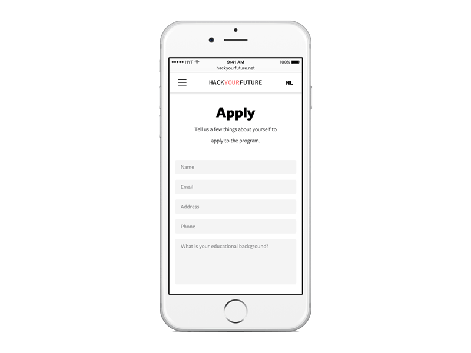
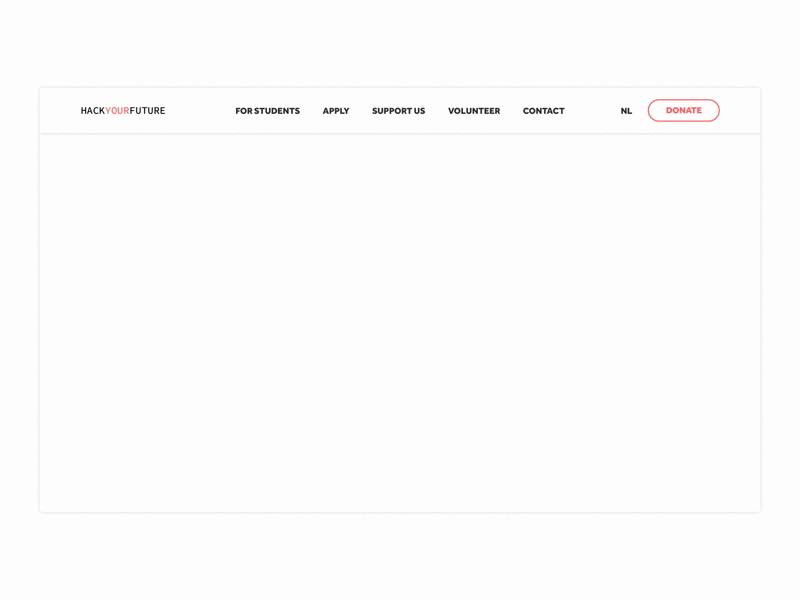
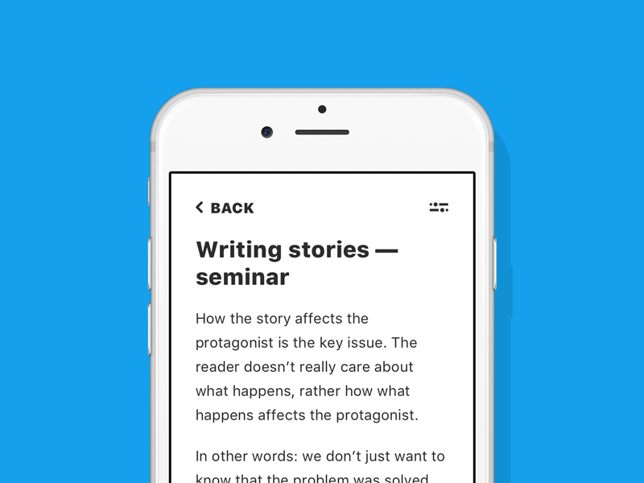
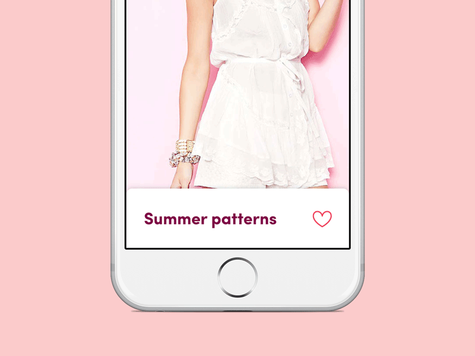
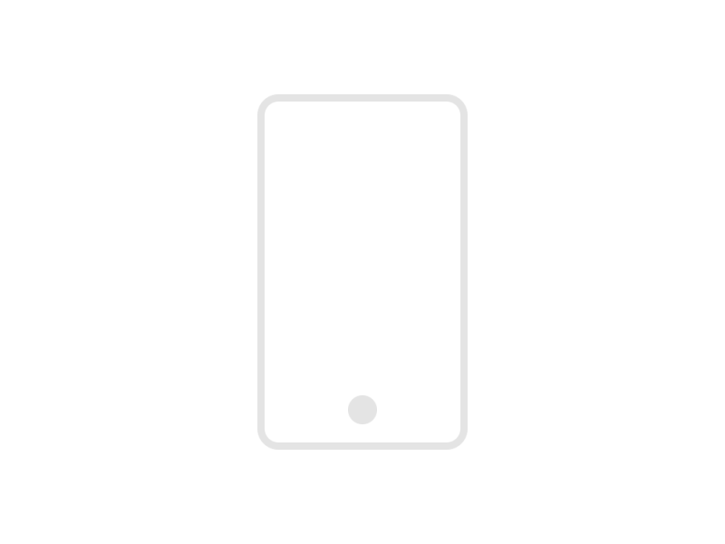
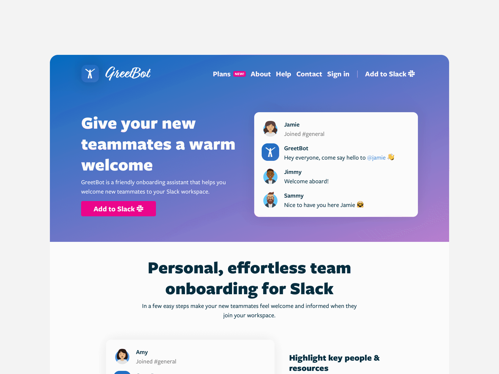

{{ project.heading }}
{{ project.role }} · {{ project.timeframe }}
{{ project.tags }}
Explore projectI’m a product designer and tool maker with 12 years of experience in the tech industry, striving to make software exciting and effortless to use. I specialize in multi-platform design (web, mobile, chat) and cross-functional collaboration, from ideation to technical implementation.
{{ project.role }} · {{ project.timeframe }}
{{ project.tags }}
Explore projectApp Development, Swift, SwiftUI, Xcode, iOS, Apple
To be an effective designer, you need to know the platforms you design for well. So in 2024, I set out to learn SwiftUI to deepen my understanding of iOS. Over the course of the next 15 months, I designed, developed, and launched three apps on the App Store. It’s been a transformative experience: today my iOS designs are more precise and better optimized for developer hand-off. It allows me to collaborate more closely with engineering teams and create designs that better balance user needs with technical requirements.
{{ app.description }}
Design Systems, Style Guides, Technical Writing
I strive to apply systems thinking throughout the entire design process. Driven by this philosophy, I have contributed to numerous wikis, handbooks, READMEs, code style guides, as well as user-facing instruction manuals, covering topics from file naming conventions to technical documentation for team alignment. I also maintain several open-source style guides, which I use as a starting point in the absence of formal project requirements.
{{ system.description }}
Motion Design, Motion Graphics, Microinteractions, Animation
Motion is an essential part of product design. It can breathe life into digital experiences and connect with the user so much more than static components ever could. I take a skeuomorphic approach to animation, drawing inspiration from the behaviors of real-world objects and physics of motion, to create interactions that feel familiar and intuitive.






Blogging, Content Writing, Editing, Microcopy, Storytelling, UX Writing
I’ve been writing in different capacities for over 15 years. In 2014 I started my personal blog on Medium.com and have since published nearly 150 articles. I write about design, startups, technology, and productivity, occasionally publishing stories from my personal life as well. I leverage my experience as a writer to create engaging content used across a variety of contexts, from microcopy to how-to articles.
{{ article.description }}